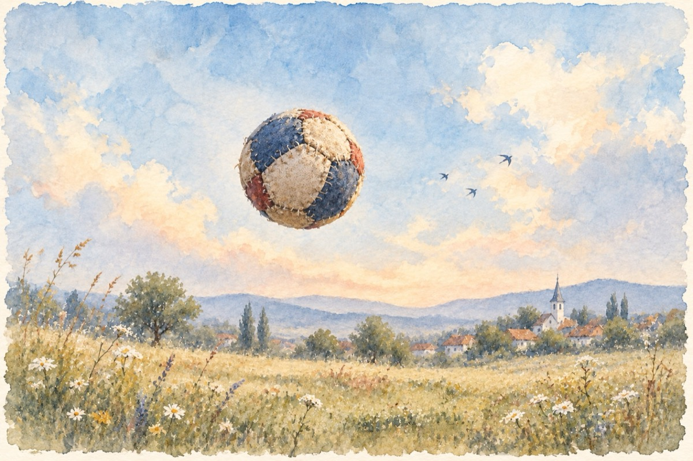

Copilăria
Copil fiind, m-au aruncat din fașă
Cum ai arunca un bolovan în apă
Dar valurile vieții m-au salvat
Și scosu-m-au chiar teafăr pe uscat!
Și pas cu pas firav pe contul meu,
Cu sprijinul primit doar de la Dumnezeu,
Purces-am în copilărie nesprijinit
Deoarece tata la primii pași ai mei, el a murit!
Războiul copilăria mi-a acoperit
Cu bombe, suferințe în loc de jucării
Cu-o mamă ce-a rămas cu trei copii.
Voi generații ce sunteți și cele viitoare
E bine să luați aminte că viața-i trecătoare!
Toate se-nvârt cu forța centrifugă, centripetă,
Istoria de vrem nu vrem adesea se repetă
De-aceea e nevoie de împărtășit
Acelora ce vin să știe ce-am pățit!
Da am făcut și fotbal și oină și poarca pe izlaz
Că așa-i copilăria nu știe de necaz!...
Cu mingi de cârpă, cu unghii rupte și opinci de porc,
La toate ce jucam, eu întotdeauna am avut noroc!
Dar sărăcia în jurul meu s-a adunat
Și într-o totalitate matematică, m-a înconjurat.
Din cauza unei mari secete, ce peste Moldova a dat
Cu trenul ,,FOAMEA” orfanii toți în Ardeal au plecat
Am luat cu noi boli, suferințe și păduchi,
Zidite toate pe același trunchi.
Dar viața a mers și merge mai departe
Frustrați de viitor, de secetă de carte
Până și astăzi se simte încă
Acolo-n suflet, precum o rană-adâncă!
De-aceea vouă copiilor ce viața o rânduiți
Cum razele de soare străluciți
Și cum copilăria mea mi-a fost furată
Aș vrea să-mi retrăiesc copilăria cu voi deodată!
De-aceea mi-am ales ca jucărie
Un pix și-o coală albă de hârtie,
Și vreau cu slovele și cu voi să mă amestec
Și tot ce nu am petrecut, cu voi să îmi petrec!
Încet, încet cu mers molcom de melc
Să mă adaptez noului cu voi încerc
Nu știu să manevrez grozav la telefoane
Pentru că în copilărie am dus vaca de coarne
Și-ncerc încet să butonez pe-ascuns
Așa cum în copilărie încercam vaca la muls
Dar totul se învață chiar dacă nu mai ești copil
Și-n viață reușești să ai un caracter, un stil!
Așa și eu de bună seamă-acum,
La optzeci și doi de ani, încerc să merg cu voi pe-același drum!
Vă mulțumesc!
Vasile Groza
Apare și în: Privește-mă în ochi (2019).